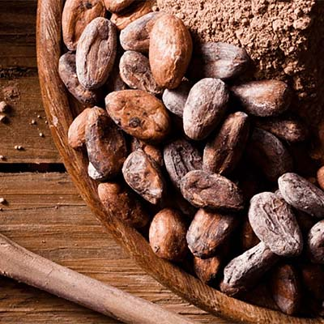
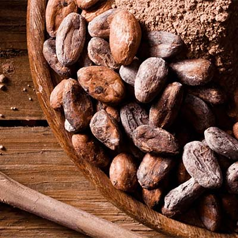

Getting to know the Obroma Cacao
Money doesn't grow on trees, but chocolate does. Some people would argue that the "Food of the Gods" is more valuable than the almighty dollar. On your next trip to the Amazon rain forest, you might stumble upon a cacao tree. Before you do, read below. You'll learn the difference between the fruit, the bean, and the bar that you crave. Did you know that chocolate and marshmallow are distant botanical relatives? Keep reading.

- The cacao tree's botanical name is Theobroma Cacao, which means "food of the gods" in Greek.
- The cacao tree grows to be about 30 feet tall bearing white flowers and colorful fruit.
- It takes a cacao tree about five years to produce its first fruit, otherwise known as a cacao pod.
- The cacao pod has a hard shell, is shaped like a bloated cucumber, and is usually red, yellow, or orange.
- It takes about 5 years for the tree to bear fruit, has a peak growing period of 10 years, but can extend for decades.
- Cacao pods take 4-5 months to grow, several weeks to ripen, and are cut from the tree with a sharp blade.
- Cacao beans take about 5 days to ferment in specialized boxes, and 1-2 weeks to sun dry on large trays.
- Each cacao pod holds roughly 40 to 50 cacao beans.
- It takes several hundred processed beans to make 1 pound of chocolate.
- The cacao bean has a white coating that is a thin film or membrane that wears off during the drying process.
- The pulp of the cacao fruit (which surrounds the beans) is edible with a flavor that is reminiscent of a lemon-flavored mango and is used by some to make juices and jellies.
- The pollination process of the flowers of the cacao tree is done by flies, not bees.
- Cocoa solids and cocoa butter are the two main components from the beans that go into making the chocolate we enjoy today.
- Cacao trees love the shade and are often grown beneath other trees such as mango, banana, papaya, or rubber trees.
- The cacao tree will not grow in arid climates as they require humidity, good soil drainage, and regular rainfall.
- The leaves of the cacao tree are over six inches long. Like all deciduous trees, it loses its leaves annually.
- There are three common species of Cacao trees: Criollo (Central America), Forastero (West Africa and South America), and Trinitario (all cacao regions).
- It originated in South America, and some argue that the precise location is the Orinoco River basin, which flows from Columbia through Venezuela to the Atlantic Ocean.
- After harvesting the fruit, the beans are extracted and then go through fermentation and drying processes.
- The Theobroma genus is in the family of Malvaceae (also known as the mallows) which has more than a thousand species including cotton, hibiscus, okra, and marsh mallow.
- The cacao tree has about 20 relatives that fall under the Theobroma genus of trees that do not produce cacao beans but they do flower and produce fruits used for medicinal purposes. In some cases, such as the mocambo, the seeds are edible.
- Theobromine is an organic compound found in cacao that has behavioral effects similar to caffeine and is also found in tea and cola.
- The top cacao production countries - all located within 20 degrees of the equator are as follows: Ivory Coast, Indonesia, Ghana, Nigeria, Cameroon, Brazil, Ecuador, Mexico.
- Cocoa butter (AKA Theobroma Oil) is used to treat bruises, stretch marks and is a popular moisturizer - particularly for people with dark skin.

 
